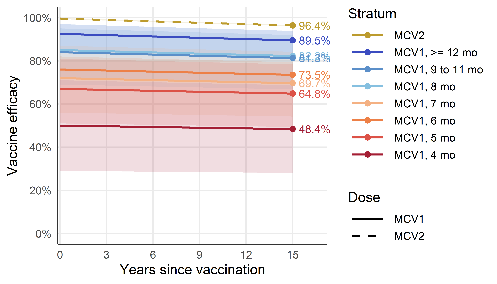
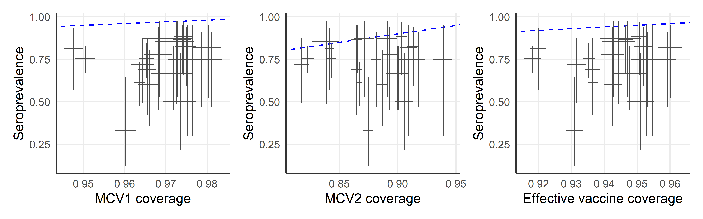

required <- c("openxlsx", "janitor", "tidyverse", "lubridate", "stringi", "sf", "patchwork")
# Installing those that are not installed yet:
to_install <- required[! required %in% installed.packages()[, "Package"]]
if (length(to_install)) install.packages(to_install)
# Loading the packages for interactive use:
invisible(sapply(required, library, character.only = TRUE))Estimate immunity profile
Models that translate vaccination to immunity
The HCMC immunisation registry provides a snapshot of the vaccination status of all registered individuals, recording the date of birth and the date of administration of each dose of a measles-containing vaccine (MCV), from which age at vaccination and total dose count are derived. Translating vaccination records into an age-stratified, population-level immunity profile is termed “effective vaccine coverage” (EVC) (Kumar et al. 2023; Shattock et al. 2024).
“The proportion of a population/cohort effectively vaccinated against measles, i.e. an indicator of population immunity. It discounts individuals ineffectively vaccinated, i.e. those who are vaccinated but still susceptible to infection.” (Kumar et al. 2023)
Depending on the available immunity data, protection can be modelled using either a binary or a continuous (titre) approach:
- Vaccine efficacy: modelling the proportion of the population that is immune.
- Antibody titres: modelling individual titre dynamics, then aggregating them to form an age-stratified immunity profile.
Waning immunity and age-at-vaccination dependence can be incorporated into both frameworks. Since longitudinal titre data for the measles vaccine remain limited, this thesis uses the binary approach.
Static coverage
The simplest model assumes vaccine efficacy (VE) remains constant over time. EVC is a weighted sum across mutually exclusive dosage strata, with weights given by the efficacy of each stratum (Kumar et al. 2023).
\[EVC = c_{\text{1 only}} \times VE_1 + c_{2+} \times VE_2\]
- \(c_{\text{1 only}}\) = proportion with 1 dose only
- \(c_{2+}\) = proportion with \(\geq 2\) doses
- \(VE_1, VE_2\) = vaccine efficacy per stratum
Waning immunity
If waning immunity is considered and longitudinal efficacy data are available (e.g. initial efficacy, efficacy after \(t\) years, efficacy half-life), efficacy at time \(t\) can be modelled using an exponential decay function, where \(\alpha\) represents initial efficacy and \(\beta\) represents the decay rate fitted from empirical data (Shattock et al. 2024).
\[VE(t) = \alpha \times e^{-\beta t}\]
EVC for a cohort of age \(a\) in year \(y\) is estimated by computing the cumulative probability of remaining unprotected despite multiple annual vaccination opportunities.
\[EVC(y, a) = 1 - \prod_{i=y-a}^{y} \big( 1 - c(i, \text{age}_{i}) \times VE(y - i) \big)\]
- \(i\) = historical calendar year (iterating from birth year \(y-a\) to current year \(y\))
- \(c(i, \text{age}_{i})\) = historical vaccine coverage in year \(i\) for the cohort’s age at that time
- \(VE(y-i)\) = residual efficacy after \(y-i\) years have elapsed
Age-at-vaccination dependence
For vaccines where efficacy depends on age at vaccination (including the measles vaccine) - both the initial efficacy and the decay rate may vary with \(\text{age}_{vax}\):
\[VE(t, \text{age}_{vax}) = \alpha(\text{age}_{vax}) \times e^{-\beta(\text{age}_{vax})\, t}\]
\[EVC(y, a) = 1 - \prod_{i=y-a}^{y} \big( 1 - c(i, \text{age}_{i}) \times VE(y - i, \text{age}_{i}) \big)\]
Individual-level extension for registry data
The formulations above were developed for settings where only annual cohort coverage \(c(i, \text{age}_i)\) is observed. They rely on two approximations:
- Time discretised at calendar-year resolution
- Coverage represented as a cohort-level proportion. Aggregate coverage tells us how many people got each dose, but not which people got which doses, or at what age. The joint distribution must be inferred from these marginals, which is called “between-dose correlation” (BdC) (Kumar et al. 2023).
The HCMC registry contains data at individual resolution, which removes both approximations. For an individual \(j\) with date of birth \(b_j\) and doses administered at dates \(t_{j,1}, \ldots, t_{j,k_j}\), the per-individual protection probability at evaluation date \(T\) is:
\[P_j(T) = 1 - \prod_{d=1}^{k_j} \big( 1 - VE(\tau_{j,d}, \, a_{j,d}) \big)\]
where \(a_{j,d} = t_{j,d} - b_j\) is the age at dose \(d\) and \(\tau_{j,d} = T - t_{j,d}\) is the time elapsed since dose \(d\). For unvaccinated individuals \(VE = 0\). This is similar to using a leaky model for vaccine effect.
\[VE(\tau, a) = \max\!\big(0,\; \alpha(a)\, e^{-\beta(a)\,\tau}\big)\]
Cohort-level EVC for a birth-date interval \(\mathcal{B}\) is then the average over individuals in that cohort:
\[EVC(T; \mathcal{B}) = \frac{1}{|\mathcal{B}|} \sum_{j: b_j \in \mathcal{B}} P_j(T)\]
Other frameworks
Static birth cohort model
This one answer another question. Given that we know the current snapshot of population immunity profile (either from seroprevalence or the EVC), we want to make projections of how the future population immunity profile would look like, given some assumption about vaccination uptake in the future. The output is projected immunity levels (Funk et al. 2019; Mburu et al. 2021).
Parameters
Initial efficacy \(\alpha(a)\) for age strata below 9 months is taken from seroconversion estimates (Lochlainn et al. 2019), as clinical vaccine effectiveness estimates are unavailable at these ages. For age strata at 9 months and older, \(\alpha(a)\) is taken from clinical VE estimates (Uzicanin and Zimmerman 2011; WHO 2017; Franconeri et al. 2023) which approximate efficacy shortly after vaccination. For simplicity, we use the same exponential waning rate \(\beta\) from (Franconeri et al. 2023) for all age strata.
| Parameter | Best estimate | 95% CI / range | Source |
|---|---|---|---|
| Seroconversion MCV1, 4 mo | 50% | 29-71% | (Lochlainn et al. 2019) |
| Seroconversion MCV1, 5 mo | 67% | 51-81% | (Lochlainn et al. 2019) |
| Seroconversion MCV1, 6 mo | 76% | 71-82% | (Lochlainn et al. 2019) |
| Seroconversion MCV1, 7 mo | 72% | 56-87% | (Lochlainn et al. 2019) |
| Seroconversion MCV1, 8 mo | 85% | 69-97% | (Lochlainn et al. 2019) |
| VE MCV1, 9-11 mo | 84.0% | 72.0-95.0% | (Uzicanin and Zimmerman 2011; WHO 2017) |
| VE MCV1, >=12 mo | 92.5% | 84.8-97.0% | (Uzicanin and Zimmerman 2011; WHO 2017) |
| VE MCV2 | 99.6% | 99.3-99.8% | (Franconeri et al. 2023) |
| Annual waning (proportion seroreverting) | 0.0022/yr | 0.0017-0.0028/yr | (Franconeri et al. 2023) |
Packages
Required packages:
Constant
Path to data:
path2data <- paste0("C:/Users/ongph/github/data")Files names:
# Vaccination coverage
vax_hcmc_file <- "vax/vaxreg_hcmc_measles.rds"
# Serology data
sero_hcmc_file <- "measles/hcm_titer/20240823_oucru_hcdc_titer.rds"Vaccine efficacy parameters per stratum, from literature:
ve_params <- tibble(
stratum = c("MCV1, 4 mo", "MCV1, 5 mo", "MCV1, 6 mo",
"MCV1, 7 mo", "MCV1, 8 mo",
"MCV1, 9 to 11 mo", "MCV1, >= 12 mo",
"MCV2"),
dose = c(rep(1, 7), 2),
alpha = c(0.50, 0.67, 0.76, 0.72, 0.85, 0.84, 0.925, 0.996),
alpha_lo = c(0.29, 0.51, 0.71, 0.56, 0.69, 0.72, 0.848, 0.993),
alpha_hi = c(0.71, 0.81, 0.82, 0.87, 0.97, 0.95, 0.970, 0.998)
)
ve_params# A tibble: 8 × 5
stratum dose alpha alpha_lo alpha_hi
<chr> <dbl> <dbl> <dbl> <dbl>
1 MCV1, 4 mo 1 0.5 0.29 0.71
2 MCV1, 5 mo 1 0.67 0.51 0.81
3 MCV1, 6 mo 1 0.76 0.71 0.82
4 MCV1, 7 mo 1 0.72 0.56 0.87
5 MCV1, 8 mo 1 0.85 0.69 0.97
6 MCV1, 9 to 11 mo 1 0.84 0.72 0.95
7 MCV1, >= 12 mo 1 0.925 0.848 0.97
8 MCV2 2 0.996 0.993 0.998Waning rate (Franconeri et al. 2023):
beta_central <- list(yr = 0.0022, lo = 0.0017, hi = 0.0028)
beta_yr <- beta_central$yr
beta_day <- beta_yr / 365.25Evaluation date and seroconversion lag:
eval_date <- as.Date("2024-04-01")
lag_days <- 14 # assuming vaccine is effective 14 days after vaccinationFunctions
Clean Vietnamese district name:
clean_district <- function(x) {
x |>
stri_trans_general("Latin-ASCII") |>
str_to_lower() |>
str_squish() |>
str_replace_all("đ", "d") |>
str_remove("^(quan |huyen |thanh pho |tp )")
}VE function of time since vaccination. For one individual on a specific dose:
- Inputs: age at vaccination (months) and time elapsed since vaccination, dose number
- Output: a VE value on the time elapsed
ve_function <- function(age_months, tau_day, dose,
beta_day,
params = ve_params) {
alpha <- case_when(
dose == 2 ~ params$alpha[params$stratum == "MCV2"],
age_months < 5 ~ params$alpha[params$stratum == "MCV1, 4 mo"],
age_months < 6 ~ params$alpha[params$stratum == "MCV1, 5 mo"],
age_months < 7 ~ params$alpha[params$stratum == "MCV1, 6 mo"],
age_months < 8 ~ params$alpha[params$stratum == "MCV1, 7 mo"],
age_months < 9 ~ params$alpha[params$stratum == "MCV1, 8 mo"],
age_months < 12 ~ params$alpha[params$stratum == "MCV1, 9 to 11 mo"],
TRUE ~ params$alpha[params$stratum == "MCV1, >= 12 mo"]
)
pmax(0, alpha * exp(-beta_day * tau_day))
}Plot this function:
stratum_grid <- tibble(
stratum = c("MCV1, 4 mo", "MCV1, 5 mo", "MCV1, 6 mo",
"MCV1, 7 mo", "MCV1, 8 mo", "MCV1, 9 to 11 mo",
"MCV1, >= 12 mo", "MCV2"),
age_months = c(4, 5, 6, 7, 8, 9, 12, 12),
dose = c(rep(1, 7), 2)
)
params_mid <- ve_params
params_lo <- ve_params |> mutate(alpha = alpha_lo)
params_hi <- ve_params |> mutate(alpha = alpha_hi)
stratum_levels <- c("MCV2", "MCV1, >= 12 mo", "MCV1, 9 to 11 mo",
"MCV1, 8 mo", "MCV1, 7 mo", "MCV1, 6 mo",
"MCV1, 5 mo", "MCV1, 4 mo")
ve_curves <- stratum_grid |>
expand_grid(year = seq(0, 15, by = 0.1)) |>
mutate(
tau_day = year * 365.25,
ve = ve_function(age_months, tau_day, dose, beta_day, params_mid),
ve_lo = ve_function(age_months, tau_day, dose, beta_day, params_lo),
ve_hi = ve_function(age_months, tau_day, dose, beta_day, params_hi),
stratum = factor(stratum, levels = stratum_levels),
dose_lab = if_else(dose == 2, "MCV2", "MCV1")
)
ve_ends <- ve_curves |>
filter(year == 15) |>
mutate(label = scales::percent(ve, accuracy = 0.1))
stratum_cols <- c(
"MCV2" = "#BC9B2E",
"MCV1, >= 12 mo" = "#3B4CC0",
"MCV1, 9 to 11 mo" = "#5B8FC9",
"MCV1, 8 mo" = "#86C0E0",
"MCV1, 7 mo" = "#F4B183",
"MCV1, 6 mo" = "#ED8047",
"MCV1, 5 mo" = "#DC5247",
"MCV1, 4 mo" = "#A41E34"
)
ggplot(ve_curves, aes(year, ve, colour = stratum, fill = stratum)) +
geom_ribbon(aes(ymin = ve_lo, ymax = ve_hi), alpha = 0.15, colour = NA) +
geom_line(aes(linetype = dose_lab), linewidth = 1) +
geom_point(data = ve_ends, size = 2.5) +
geom_text(data = ve_ends, aes(label = label),
hjust = 0, nudge_x = 0.4, size = 4, show.legend = FALSE) +
scale_colour_manual(values = stratum_cols, name = "Stratum") +
scale_fill_manual(values = stratum_cols, guide = "none") +
scale_linetype_manual(values = c("MCV1" = "solid", "MCV2" = "dashed"),
name = "Dose") +
scale_x_continuous(breaks = seq(0, 15, by = 3),
expand = expansion(mult = c(0.01, 0.12))) +
scale_y_continuous(labels = scales::percent_format(),
breaks = seq(0, 1, by = 0.2)) +
coord_cartesian(ylim = c(0, 1), clip = "off") +
labs(x = "Years since vaccination", y = "Vaccine efficacy") +
guides(colour = guide_legend(order = 1),
linetype = guide_legend(order = 2)) +
theme_minimal(base_size = 14) +
theme(
panel.grid.minor = element_blank(),
legend.key.width = unit(1.4, "cm"),
axis.line = element_line(colour = "grey20")
)
Data
Vaccination coverage:
df_vax_hcmc <- file.path(path2data, vax_hcmc_file) |>
readRDS() |>
# Drop MCV2-only: likely data entry error (only 3 rows)
filter(!(is.na(date_m1) & !is.na(date_m2))) |>
# Add ID
mutate(
id = row_number(),
district = clean_district(district),
# Doses administered after eval_date haven't happened yet
date_m1 = if_else(date_m1 > eval_date, as.Date(NA), date_m1),
date_m2 = if_else(date_m2 > eval_date, as.Date(NA), date_m2),
age_m1 = as.numeric(date_m1 - dob) / (365.25 / 12),
age_m2 = as.numeric(date_m2 - dob) / (365.25 / 12),
tau_m1 = pmax(0, as.numeric(eval_date - date_m1) - lag_days),
tau_m2 = pmax(0, as.numeric(eval_date - date_m2) - lag_days)
)Serology:
df_sero_full <- readRDS(file.path(path2data, sero_hcmc_file)) |>
mutate(district = clean_district(district))Immunity profile
evc_point <- df_vax_hcmc |>
mutate(
ve1 = if_else(
is.na(date_m1),
0,
ve_function(age_months = age_m1, tau_day = tau_m1, dose = 1,
beta_day = beta_day)
),
ve2 = if_else(
is.na(date_m2),
0,
ve_function(age_months = age_m2, tau_day = tau_m2, dose = 2,
beta_day = beta_day)
),
P = 1 - (1 - ve1) * (1 - ve2)
)
evc_by_district <- evc_point |>
mutate(age_yr = as.numeric(eval_date - dob) / 365.25) |>
filter(age_yr >= 9/12, age_yr <= 5) |>
group_by(district) |>
summarise(
n = n(),
mean = mean(P),
sd = sd(P),
se = sd / sqrt(n),
lower = pmax(0, mean - qnorm(0.975) * se),
upper = pmin(1, mean + qnorm(0.975) * se),
.groups = "drop"
) |>
arrange(desc(mean))Compared to serology
df_sero <- df_sero_full |>
mutate(location = factor(location, levels = c("CH1", "CH2", "CCH"))) |>
filter(age >= 9/12, age <= 5, !is.na(district)) |>
group_by(district) |>
summarise(
pos = sum(pos),
n = n(),
cov = pos / n,
ci_low = binom::binom.wilson(pos, n)$lower,
ci_high = binom::binom.wilson(pos, n)$upper,
dose = "Sero"
)
plot_data <- evc_by_district |>
select(district, evc_mean = mean, evc_lo = lower, evc_hi = upper) |>
inner_join(
df_sero |>
filter(dose == "Sero") |>
select(district, sero_mean = cov, sero_lo = ci_low, sero_hi = ci_high),
by = "district"
)
# Determine axis range from the data
axis_lo <- min(c(plot_data$evc_lo, plot_data$sero_lo), na.rm = TRUE) * 0.95
axis_hi <- max(c(plot_data$evc_hi, plot_data$sero_hi), na.rm = TRUE) * 1.02
p1 <- ggplot(plot_data, aes(x = evc_mean, y = sero_mean)) +
# 1:1 diagonal — drawn first so it sits behind the data
geom_abline(slope = 1, intercept = 0,
linetype = "dashed", colour = "blue", linewidth = 0.5) +
# Horizontal CI bars (seroprevalence)
geom_errorbar(aes(ymin = sero_lo, ymax = sero_hi),
width = 0, colour = "grey30", linewidth = 0.4) +
# Vertical CI bars (EVC)
geom_errorbarh(aes(xmin = evc_lo, xmax = evc_hi),
height = 0, colour = "grey30", linewidth = 0.4) +
labs(x = "Effective vaccine coverage", y = "Seroprevalence") +
theme_minimal(base_size = 11) +
theme(
panel.grid.minor = element_blank(),
legend.key.width = unit(1.4, "cm"),
axis.line = element_line(colour = "grey20")
)
# ggsave("figs/seroVsCov.png", plot = p1, width = 2.5, height = 2.3, dpi = 300, bg = "white")mcv1_hcm <- df_vax_hcmc |>
mutate(
age_eval_m = as.numeric(eval_date - dob) / (365.25 / 12)
) |>
filter(age_eval_m >= 9, age_eval_m <= 60, !is.na(district)) |>
group_by(district) |>
summarise(
pos = sum(!is.na(date_m1)),
n = n(),
cov = pos / n,
ci_low = binom::binom.wilson(pos, n)$lower,
ci_high = binom::binom.wilson(pos, n)$upper,
dose = "MCV1",
.groups = "drop"
)
# ---- Join MCV1 and sero for the cross-sectional comparison ----------------
plot_data <- mcv1_hcm |>
select(district,
mcv1_mean = cov, mcv1_lo = ci_low, mcv1_hi = ci_high) |>
inner_join(
df_sero |>
select(district,
sero_mean = cov, sero_lo = ci_low, sero_hi = ci_high),
by = "district"
)
# ---- Plot ------------------------------------------------------------------
p2 <- ggplot(plot_data, aes(x = mcv1_mean, y = sero_mean)) +
# 1:1 diagonal, drawn first so it sits behind the data
geom_abline(slope = 1, intercept = 0,
linetype = "dashed", colour = "blue", linewidth = 0.5) +
# Horizontal CI bars (seroprevalence)
geom_errorbar(aes(ymin = sero_lo, ymax = sero_hi),
width = 0, colour = "grey30", linewidth = 0.4) +
# Vertical CI bars (MCV1 coverage)
geom_errorbarh(aes(xmin = mcv1_lo, xmax = mcv1_hi),
height = 0, colour = "grey30", linewidth = 0.4) +
labs(x = "MCV1 coverage", y = "Seroprevalence") +
theme_minimal(base_size = 11) +
theme(
panel.grid.minor = element_blank(),
legend.key.width = unit(1.4, "cm"),
axis.line = element_line(colour = "grey20")
)
# ggsave("figs/seroVsMcv1.png", plot = p2, width = 2.5, height = 2.3, dpi = 300, bg = "white")mcv2_hcm <- df_vax_hcmc |>
mutate(
age_eval_m = as.numeric(eval_date - dob) / (365.25 / 12)
) |>
filter(age_eval_m >= 18, age_eval_m <= 60, !is.na(district)) |>
group_by(district) |>
summarise(
pos = sum(!is.na(date_m2)),
n = n(),
cov = pos / n,
ci_low = binom::binom.wilson(pos, n)$lower,
ci_high = binom::binom.wilson(pos, n)$upper,
dose = "MCV2",
.groups = "drop"
)
# ---- Join MCV1 and sero for the cross-sectional comparison ----------------
plot_data <- mcv2_hcm |>
select(district,
mcv2_mean = cov, mcv2_lo = ci_low, mcv2_hi = ci_high) |>
inner_join(
df_sero |>
select(district,
sero_mean = cov, sero_lo = ci_low, sero_hi = ci_high),
by = "district"
)
# ---- Plot ------------------------------------------------------------------
p3 <- ggplot(plot_data, aes(x = mcv2_mean, y = sero_mean)) +
# 1:1 diagonal, drawn first so it sits behind the data
geom_abline(slope = 1, intercept = 0,
linetype = "dashed", colour = "blue", linewidth = 0.5) +
# Horizontal CI bars (seroprevalence)
geom_errorbar(aes(ymin = sero_lo, ymax = sero_hi),
width = 0, colour = "grey30", linewidth = 0.4) +
# Vertical CI bars (MCV1 coverage)
geom_errorbarh(aes(xmin = mcv2_lo, xmax = mcv2_hi),
height = 0, colour = "grey30", linewidth = 0.4) +
labs(x = "MCV2 coverage", y = "Seroprevalence") +
theme_minimal(base_size = 11) +
theme(
panel.grid.minor = element_blank(),
legend.key.width = unit(1.4, "cm"),
axis.line = element_line(colour = "grey20")
)
# ggsave("figs/seroVsMcv2.png", plot = p3, width = 2.5, height = 2.3, dpi = 300, bg = "white")p2 + p3 + p1
References
Franconeri, Léa, Denise Antona, Simon Cauchemez, Daniel Lévy-Bruhl, and Juliette Paireau. 2023. “Two-Dose Measles Vaccine Effectiveness Remains High over Time: A French Observational Study, 20172019.” Vaccine 41 (39): 5797–5804. https://doi.org/10.1016/j.vaccine.2023.08.018.
Funk, Sebastian, Jennifer K. Knapp, Emmaculate Lebo, Susan E. Reef, Alya J. Dabbagh, Katrina Kretsinger, Mark Jit, W. John Edmunds, and Peter M. Strebel. 2019. “Combining Serological and Contact Data to Derive Target Immunity Levels for Achieving and Maintaining Measles Elimination.” BMC Medicine 17 (1): 180. https://doi.org/10.1186/s12916-019-1413-7.
Kumar, Shurendar Selva, Anna-Maria Hartner, Arunah Chandran, Katy A. M. Gaythorpe, and Xiang Li. 2023. “Evaluating Effective Measles Vaccine Coverage in the Malaysian Population Accounting for Between-Dose Correlation and Vaccine Efficacy.” BMC Public Health 23 (1): 2351. https://doi.org/10.1186/s12889-023-17082-9.
Lochlainn, Laura M. Nic, Brechje de Gier, Nicoline van der Maas, Peter M. Strebel, Tracey Goodman, Rob S. van Binnendijk, Hester E. de Melker, and Susan J. M. Hahné. 2019. “Immunogenicity, Effectiveness, and Safety of Measles Vaccination in Infants Younger Than 9 Months: A Systematic Review and Meta-Analysis.” The Lancet Infectious Diseases 19 (11): 1235–45. https://doi.org/10.1016/S1473-3099(19)30395-0.
Mburu, C. N., J. Ojal, R. Chebet, D. Akech, B. Karia, J. Tuju, A. Sigilai, et al. 2021. “The Importance of Supplementary Immunisation Activities to Prevent Measles Outbreaks During the COVID-19 Pandemic in Kenya.” BMC Medicine 19 (1): 35. https://doi.org/10.1186/s12916-021-01906-9.
Shattock, Andrew J., Helen C. Johnson, So Yoon Sim, Austin Carter, Philipp Lambach, Raymond C. W. Hutubessy, Kimberly M. Thompson, et al. 2024. “Contribution of Vaccination to Improved Survival and Health: Modelling 50 Years of the Expanded Programme on Immunization.” The Lancet 403 (10441): 2307–16. https://doi.org/10.1016/S0140-6736(24)00850-X.
Uzicanin, Amra, and Laura Zimmerman. 2011. “Field Effectiveness of Live Attenuated Measles-Containing Vaccines: A Review of Published Literature.” The Journal of Infectious Diseases 204 (suppl_1): S133–49. https://doi.org/10.1093/infdis/jir102.
WHO. 2017. “Measles Vaccines: WHO Position Paper April 2017.” https://www.who.int/publications/i/item/who-wer9217-205-227.